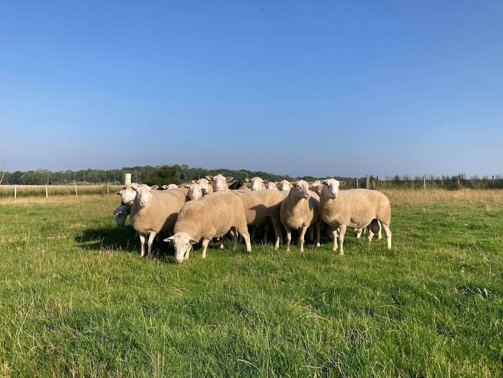

Le centre d'insémination animale
Pourquoi inséminer ses brebis ?
Depuis 2020, le centre d'insémination d'OSON, situé à Verdilly dans l'Aisne, accueille les béliers Romane.
L'expérience d'OSON nous permet de vous fournir toute l'année de la semence, fraîche ou congelée, dans toute la France.
Pour produire des agnelles de renouvellement, deux solutions s'offrent à vous : acheter des béliers, ou utiliser l'insémination animale. Aujourd'hui, l'IA a de nombreux avantages et permet d'améliorer les résultats de l'exploitation.

Pourquoi inséminer ?
Améliorer le niveau génétique de votre troupeau
Les béliers utilisés pour l'IA sont l'élite de la race. Ils sont tous issus de station de contrôle et choisis en fonction de leurs index et de leurs résultats en station (croissance, conformation bouchère, épaisseur de gras…). Leur utilisation améliore les performances du troupeau : productivité et longévité des brebis, qualité des agneaux.
Optimiser les résultats technico-économiques
L'insémination n'est pas une charge mais un investissement sur votre troupeau. Les brebis issues d'insémination ont une meilleure valeur laitière : la part de la croissance des agneaux liée à l'allaitement augmente, celle des concentrés diminue. Dans notre race, les agneaux des brebis ayant les meilleurs index de valeur laitière partent plus de 10 jours plus tôt. Une étude récente démontre qu'ils offrent une marge supérieure de 10 euros par animal.
Améliorer l'organisation du travail
Inséminer permet d'avoir un agnelage très groupé, s'étalant sur une dizaine de jours (hors repasse). L'organisation du bâtiment et du temps de travail se prévoit en amont. Les agneaux sont homogènes, le sevrage et l'engraissement plus faciles.
Depuis 2023, l'évaluation des béliers destinés au centre d'IA porte aussi sur leur résistance aux parasites gastro-intestinaux. Une partie de nos béliers disponibles est évaluée sur l'efficacité alimentaire. Vous disposez ainsi d'outils supplémentaires pour améliorer la qualité de votre troupeau.